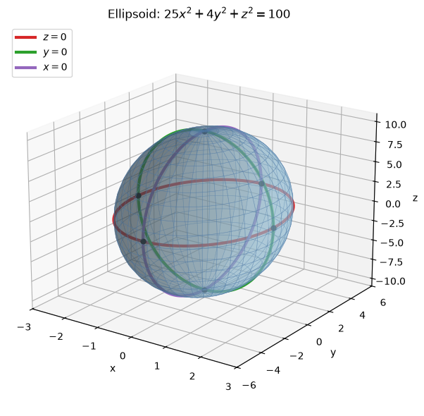
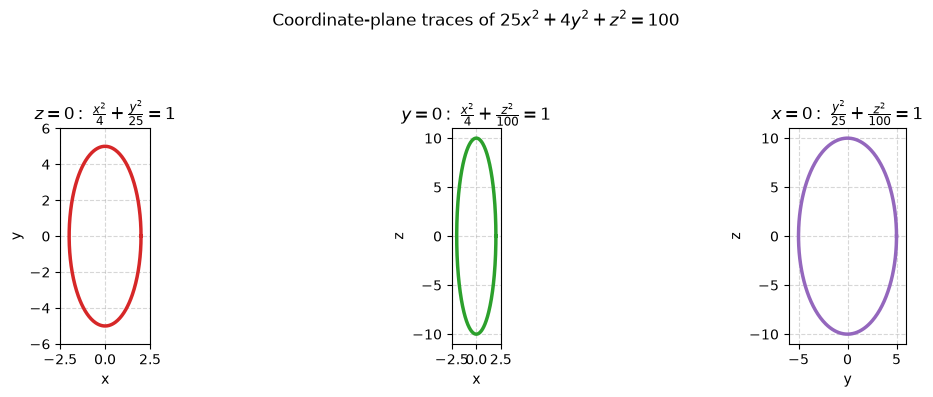
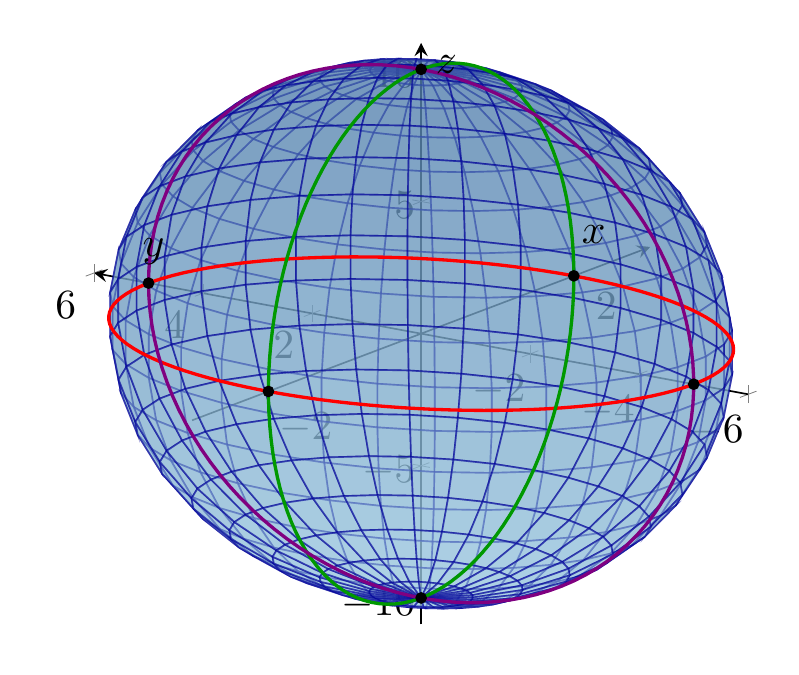
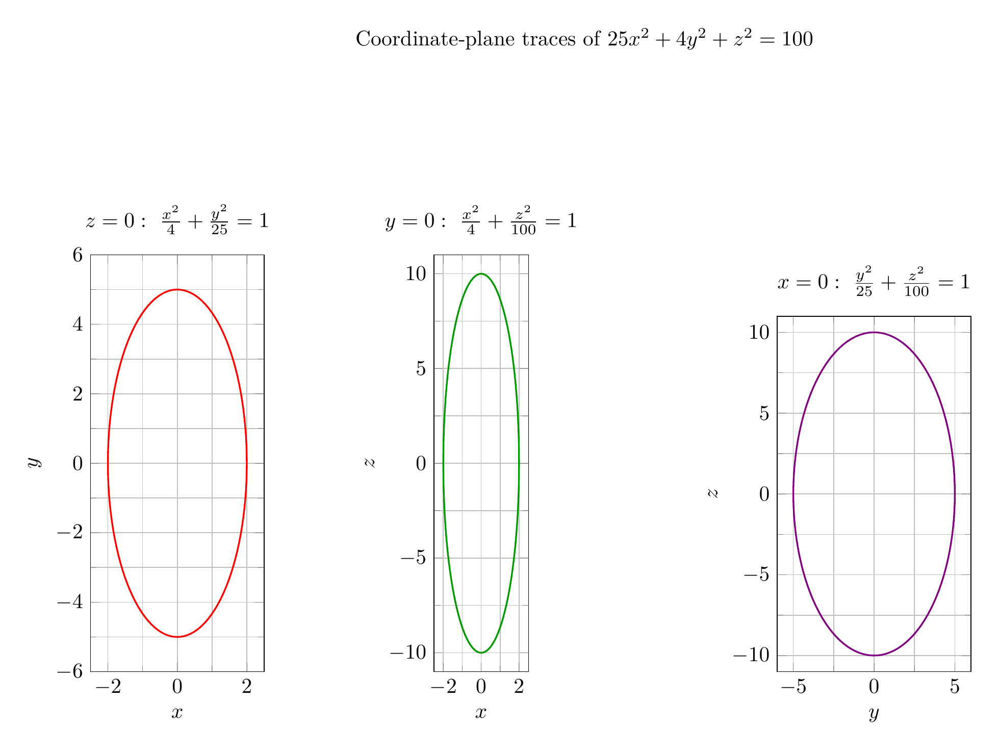

Path: mcma-Nex-N2-Pro/calculus-12.6.14/chat_20260824_173541_914887_utc_0800
Problem
Please solve the math problem in the image.

End of problem
Answer
To identify the surface, put the equation in standard quadric-surface form by dividing by $100$:
$$
25x^2+4y^2+z^2=100
\quad\Longrightarrow\quad
\frac{x^2}{4}+\frac{y^2}{25}+\frac{z^2}{100}=1.
$$
This has the form
$$
\frac{x^2}{a^2}+\frac{y^2}{b^2}+\frac{z^2}{c^2}=1,
$$
so the surface is an ellipsoid centered at the origin with semi-axis lengths
$$
a=2,\qquad b=5,\qquad c=10.
$$
The coordinate-plane traces are ellipses:
- In the plane $z=0$:
$$
\frac{x^2}{4}+\frac{y^2}{25}=1,
$$
an ellipse with $x$-intercepts $\pm 2$ and $y$-intercepts $\pm 5$.
- In the plane $y=0$:
$$
\frac{x^2}{4}+\frac{z^2}{100}=1,
$$
an ellipse with $x$-intercepts $\pm 2$ and $z$-intercepts $\pm 10$.
- In the plane $x=0$:
$$
\frac{y^2}{25}+\frac{z^2}{100}=1,
$$
an ellipse with $y$-intercepts $\pm 5$ and $z$-intercepts $\pm 10$.
Thus the surface is an ellipsoid stretched most in the $z$-direction, less in the $y$-direction, and least in the $x$-direction.
$$
\boxed{\text{The surface is an ellipsoid centered at the origin with semi-axes }2,5,10.}
$$
---


\documentclass[border=10pt]{standalone}
\usepackage{pgfplots}
\pgfplotsset{compat=1.18}
\begin{document}
\begin{tikzpicture}
\begin{axis}[
view={-55}{20},
width=11cm, height=9cm,
xlabel={$x$}, ylabel={$y$}, zlabel={$z$},
xmin=-3, xmax=3, ymin=-6, ymax=6, zmin=-11, zmax=11,
grid=none,
axis lines=center,
colormap={ellipsoidblue}{rgb255(0cm)=(157,202,225); rgb255(1cm)=(76,120,168)},
]
\addplot3[
surf,
domain=0:360,
y domain=0:180,
samples=35,
samples y=20,
shader=flat,
opacity=0.55,
draw=blue!60!black
]
({2*sin(y)*cos(x)}, {5*sin(y)*sin(x)}, {10*cos(y)});
\addplot3[domain=0:360, samples=120, red, thick]
({2*cos(x)}, {5*sin(x)}, 0);
\addplot3[domain=0:360, samples=120, green!60!black, thick]
({2*cos(x)}, 0, {10*sin(x)});
\addplot3[domain=0:360, samples=120, violet, thick]
(0, {5*cos(x)}, {10*sin(x)});
\addplot3[only marks, mark=*, mark size=1.2pt, black]
coordinates {(2,0,0) (-2,0,0) (0,5,0) (0,-5,0) (0,0,10) (0,0,-10)};
\end{axis}
\end{tikzpicture}
\end{document}

\documentclass[border=10pt]{standalone}
\usepackage{pgfplots}
\pgfplotsset{compat=1.18}
\begin{document}
\begin{tikzpicture}
\node[anchor=south] at (8.2cm,10.2cm) {Coordinate-plane traces of $25x^2+4y^2+z^2=100$};
\begin{axis}[
at={(0,0)},
anchor=south west,
width=4.8cm, height=8.5cm,
xlabel={$x$}, ylabel={$y$},
xmin=-2.5, xmax=2.5, ymin=-6, ymax=6,
grid=both,
minor tick num=1,
title={$z=0:\ \frac{x^2}{4}+\frac{y^2}{25}=1$},
axis equal image=true,
]
\addplot[domain=0:360, samples=120, red, thick] ({2*cos(x)}, {5*sin(x)});
\end{axis}
\begin{axis}[
at={(5.7cm,0)},
anchor=south west,
width=4.8cm, height=8.5cm,
xlabel={$x$}, ylabel={$z$},
xmin=-2.5, xmax=2.5, ymin=-11, ymax=11,
grid=both,
minor tick num=1,
title={$y=0:\ \frac{x^2}{4}+\frac{z^2}{100}=1$},
axis equal image=true,
]
\addplot[domain=0:360, samples=120, green!60!black, thick] ({2*cos(x)}, {10*sin(x)});
\end{axis}
\begin{axis}[
at={(11.4cm,0)},
anchor=south west,
width=4.8cm, height=8.5cm,
xlabel={$y$}, ylabel={$z$},
xmin=-6, xmax=6, ymin=-11, ymax=11,
grid=both,
minor tick num=1,
title={$x=0:\ \frac{y^2}{25}+\frac{z^2}{100}=1$},
axis equal image=true,
]
\addplot[domain=0:360, samples=120, violet, thick] ({5*cos(x)}, {10*sin(x)});
\end{axis}
\end{tikzpicture}
\end{document}

End of answer